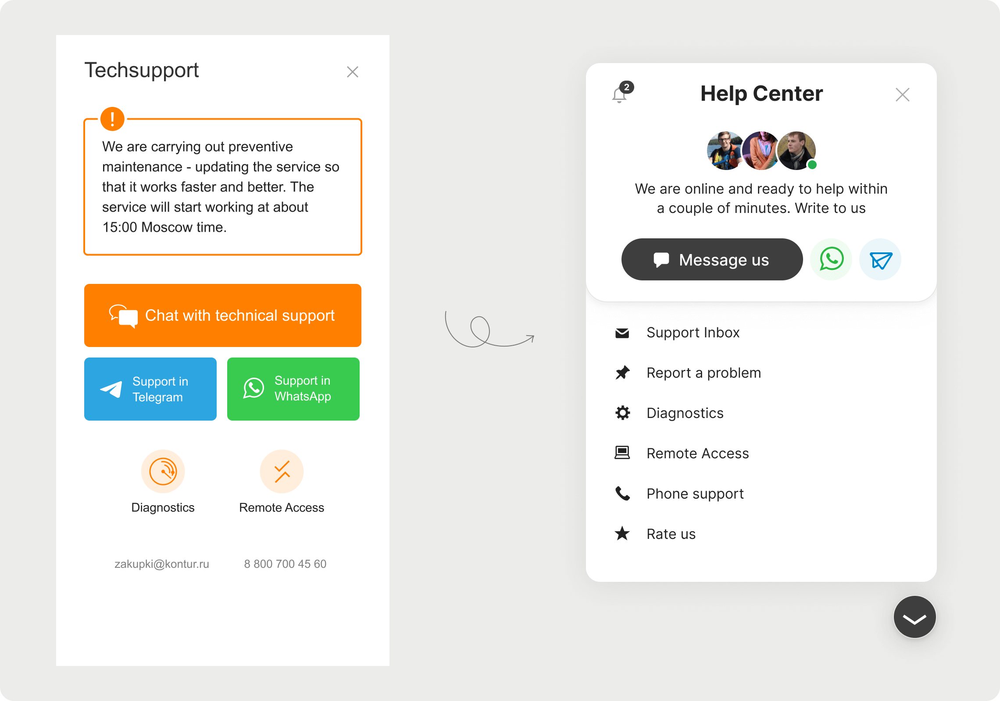
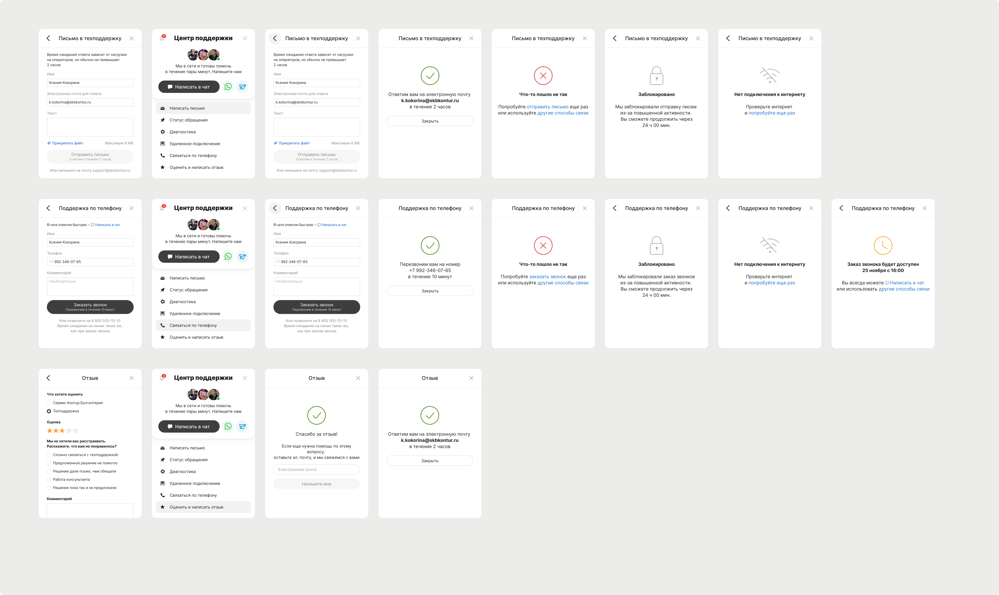

Kontur is a B2B software company making 70 online services for 2 million businesses in Russia. Many product teams use Help Center – a universal tool for communication between clients and technical support, like Intercom. It consists of a messenger, contacts, ordering a callback, etc.
Problems:
– Low percent of chats instead of phone calls. Support via phone is much more expensive than via chat.
– Outdated design. And so some product teams often refused to use Help Center.
Old design of Help Center:
My role was as an art director, and the designer was Ksenia Kokorina, Sergei Semin helped us with conceptual designs. We made some research and found references. I proposed the concept:
– highlight the messenger and make it the main thing in this tool
– tidy up other tools and links and make them less significant
– add customization for brand colors of the products
First drafts:
Also, I took into account the stages of implementation. Firstly, for taking care of users and not to shock them, and secondly, to make it easier for development:

To promote the Help Center among the products, I gathered all the 50 designers, told them about the current problems of the widget, presented our concept and the final design. Designers were inspired, many wanted to use the new Help Center.
Before and After:
In 2021, the widget was opened by 1.7 million users. Questions handled with the messenger increased from 15% to 45% after the redesign.
